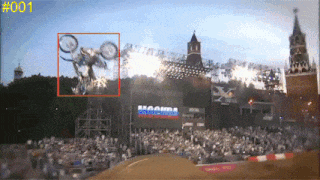

Visual Tracking
Jifeng Ning, Jimei Yang, Shaojie Jiang, Lei Zhang, and Ming-Hsuan Yang, Visual Tracking via Dual Linear Structured SVM and Explicit Feature Map, CVPR 2016.
Yuankai Qi, Shengping Zhang, Lei Qin, Qingming Huang, Hongxun Yao, Jongwoo Lim, and Ming-Hsuan Yang, Hedged Deep Tracking, CVPR 2016.
Chao Ma, Jia-Bin Huang, Xiaokang Yang, and Ming-Hsuan Yang, Hierarchical Convolutional Features for Visual Tracking, ICCV 2015.
